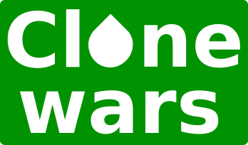

2013-09-21: Yo,Maker. TEDx Valladolid

Contenido
[ocultar]Ficha

- Título: Yo, Maker
- Evento: TEDx Valladolild
- Lugar: LAVA, Laboratorio de las artes de Valladolid
- Ponente: Juan González Gomez
- Duración: 15 minutos
- Fecha: 21/09/2013
- Video en la página de TED
Resumen
Juan, Ingeniero de Telecomunicaciones, Doctor en robótica, conocido como Obijuan, y "Maker" por vocación, es un firme defensor del movimiento de software libre, el hardware libre y la cultura libre, y en esta charla explica de una manera clara, precisa y contundente qué y quién es un verdadero Maker y su propuesta para redefinir definitivamente la tecnología
Descarga de la presentación
| yo-maker.pdf | Transparencias originales, en PDF. Son las que se enviaron a TEDxValladolid |
| yo-maker-TEDx-final.pdf | Transparencias finales que se proyectaron. Retocadas por Daniel Calvo Figorski (AV Sistemas Audiovisuales) |
| yo-maker.odp | Fuentes de las transparencias originales, para LibreOffice 4.0.2.2 |
| patrimonio-tecnologico-humanidad-drawing.svg | Fuentes del dibujo del "puzzle" del Patrimonio Tecnológico de la humanidad (En SVG, editable con el Inkscape) |

Vídeo de la Charla
| 300|250</youtube> |
- Vídeo completo de la charla (grabada por streaming) con la presentación de Belén Viloria.
Fotos del evento
| Álbum de fotos oficial de TEDxValladolid (en Flicker) | Álbum de fotos de Cole (en G+) |
|---|


El Reto de las X de CloneWars
El lanzamiento
El 9 de septiembre de 2013, 12 días antes de la celebración de TEDx Valladolid, Juan Manuel Amuedo (Cole), lanzó el reto con este mensaje.
La comunidad Clone Wars respondió muy rápido... y nos pusimos a ello. En pocos días se imprimieron en total 700 Xs, que se enviaron a Jose Luis del Olmo para llevarlas a TEDxValladolid.
El Vídeo
Con todas las fotos que la gente hizo en sus casas y en los MakeSpaces, Carlos Cervilla confeccionó este GLORIOSO VÍDEO, que fué proyectado en directo el 21 de Septiembre en TEDxVALLADOLID, ante la atónita mirada de los asistentes. Ahora ya sabían de dónde procedía esa X que tenían en la acreditación.
El diseño de las Xs
El diseño de la Xs lo hice a partir de una imágen que me envió Belén Viloria. Está diseñado con la herramienta libre OpenScad.
| tedx.stl | Una X en formato STL, lista para imprimir en 3D |
| tedx-x.zip | Fuentes en Openscad |
| Repositorio github | Ficheros fuente en github |
Fotos
| Álbum de fotos (en G+) |
|---|


Blog: Así viví TEDxValladolid 2013
Más información
Sobre el evento TEDx Valladolid
- Una docena de ideas clave del segundo TEDxValladolid
- Segundo TEDxValladolid. En el camino
- Entrevista a Belén Viloria
- Reto CloneWars en TEDxValladolid
- Un TEDxValladolid de Record
- Karla Frechina
- TEDxValladolid Una filosofía con la que nos identificamos
- La clave está en el re
- Yo sigo a Obijuan, Yo sigo al maker
Sobre Robots modulares
- Tesis de Obijuan sobre robots modulares: documentación, ejemplos, enlaces a todos los robots construidos, vídeos, etc...
- Módulos REPYZ
- REPY-2.0
- Módulos_REPY-1
- Módulos_MY: Versión de aluminio de los módulos Y1
- Módulos_Y1: Módulos iniciales. Piezas cortadas por láser
- ArduSnake:_Arduino_Modular_Snake_Robots_Library: Biblioteca para Arduino para mover robots modulares
Sobre impresoras 3D
- RepRap: Impresoras 3D auto-replicantes
- Thingiverse: El youtube de los objetos
- Objetos 3D: Objetos imprimibles
- Proyecto Clone wars: Construye tu propia impresora 3D
- Clon R2D2: El primer clon de Clone-wars
Sobre herramientas libres de diseño
- OpenScad: Herramienta libre para diseño de piezas
- Kicad: Herramienta libre para diseño de circuitos
- Freecad: Herramienta libre de CAD
- OOML: Object Oriented Mechanics. Mecánica orientada a Objetos
Electrónica (hardware libre 2)
- SkyMega: Compatible Arduino
- Escudo para Printbots: Escudo minimalista para hacer printbots con Arduino UNO
- Array de CNY70 para Printbots. Sensores de infrarrojos para los printbots
- PrintShield. Escudo de Arduino para hacer printbots
Sobre printbots
- Mini-Skybot: Robot Miniskybot
- Robodraw
- Orugator, por Olalla Bravo y Daniel Gómez
- Unitrack, Jon Goitia
- 4track, por Jon Goitia y Julián Marín Mato
- Scout, por Sliptonic
- Protobot, por Nieves Cubo, Alberto Valero y Mario Almagro
- HKTR-9000, por Carlos García Saura
- ArduSkybot, por Carlos García Saura
- Skyball, por Miguel Angel de Frutos
- Rover, por Jon Goitia
- D-track por Daniel González
- Mars Rover, por Mario Almagro
- Cuadrúpedo AT-AS, por Anita del Prado
- Brazo robótico de 6 DOF, por Antonio Castro
- Water Oscillator: Printbot acuático, por Miguel Angel de Frutos
- CB-1: Tubot. Robot educacional, por Complubot
- CB-2: Tubot. Version 2. Robot educacional, por Complubot
Créditos
- Belén Viloria, es la organizadora de TEDxValladolid
- Jose Luis del Olmo, organizador del área de makers
- Juan Manuel Amuedo (Cole), organizador del reto CloneWars de las X
- Carlos Cervilla, Vídeo del reto CloneWars de las Xs
- Participantes en el área de Makers
- Jose Luis del Olmo
- Fernando Burgos
- Samuel Ureta
- Miguel Angel de Frutos
- Carlos García Saura
- David Estévez
- Participantes en el reto de las X
- Alex TC (Coruña)
- Xoan Sampaiño (Coruña)
- Manuel Hidalgo (Albacete)
- Juan Carlos Gavari (Barcelona)
- Nayma Rescue (Barcelona)
- Pedro Lahuerta (Cuenca)
- Jesús Siero (León)
- Gonzalo (León)
- Juan Manuel Amuedo (Madrid)
- Obijuan (Madrid)
- Carlos Cervilla (Madrid)
- Fred Muscinesi (Madrid)
- David Estévez (Madrid)
- Jose Ramón Macías (Madrid)
- Nuria Almodóvar (Madrid)
- Vicente Almodóvar (Madrid)
- Julio Galarón (Madrid)
- Carlos García Saura (Madrid)
- Fernando Remiro (Madrid)
- Jose María Martín (Madrid)
- Daniel Pietrosemoli (Madrid)
- Sara Alvarellos (Madrid)
- Francisco Malpartida (Málaga)
- Paco Martos (Málaga)
- Miguel Ángel González (Málaga)
- Erik, Kristofer y David Cuartielles (Malmo, Suecia)
- Pablo Otón (Murcia)
- Ricardo Pérez (Valencia)
- Jose Luis del Olmo (Valladolid)
- Emilio José Morán (Valladolid)
Licencia
| |
Agradecimientos
- A Belén Viloria, por invitarme a participar como ponente y dejar ahí "mi legado" ;-). Ha sido todo un privilegio. ¡Muchas gracias! Y muchas gracias también por invitar a mis padres al evento. No se cómo lo haces... pero con tu pasión y entrega consigues sacar lo mejor de todos nosotros!!!
- A Cole (Juan Manuel Amuedo) por organizar el reto de las X y por venir a Valladolid a la zona de makers. El reto de las Xs solo se ha podido hacer por el gran poder de movilización que tiene cole. Efecto conocido como: "si Cole me dice ven, lo dejo todo..." ¡Muchas gracias!
- A Jose Luis del Olmo por organizar el area de makers y por el despliegue que hizo!!! Y además creando un ambiente de buen rollo increible!! Yo lo flipé con el café que nos extruiste!!! ¡Muchas gracias!
- Gracias a todos los super makers que vinísteis al área de makers y estuvísteis enseñando incansablemente vuestros robots y diseños. La gente lo flipó con vosotros!!!! :
- Miguel angel de frutos (MAF)
- Carlos García Saura
- David Estévez
- Cole (Colepower!!)
- Jose Luis del Olmo
- Samuel Ureta
- Fernando Burgos
- Gracias a todos los que os unísteis al reto de las Xs. Los asistentes lo fliparon. Al principio nadie sabía nada de dónde procedían las Xs. Y cuando vieron el video... se dieron cuenta de que sus Xs eran algo único. Hechas por un maker anonimo. Solo para ellos.
- Gracias a Carlos Cervilla (Cácer) por el vídeo. A pesar de que yo ya lo había visto... cuando lo vi proyectado en la pantalla grande de Tedx Valladolid.... lloré de la emoción!!!! Fue algo increíble!!!
- Muchísimas gracias a todos los voluntarios y organizadores de Tedx Valladolid. Gracias por dejaros la piel y hacernos a todos este regalo.
- Gracias a todos los que vinísteis a ver TEDx Valladolid en directo. Me sentí arropado en todo momento. Y eso es algo fundamental para mi. Soy muy introvertido. Mi naturaleza es estar yo solo en un laboratorio frikeando. Y no me desenvuelvo bien en eventos sociales. Pero en tedx valladolid estábais allí. A mi lado :-)
- Alberto Valero
- Nieves Cubo (Nicuma)
- Miguel angel de frutos (MAF)
- Carlos Garcia Saura
- David Estevez
- Juan Manuel Amuedo (Cole)
- Jose Luis del Olmo
- Fernando Burgos
- Jesusseiro
- La gente del Fablab Leon
- A. J. Lucas
- Muchos mas que estabais ahí pero que no me se vuestros nombres
Noicias
- 27/Oct/2013: Primera versión de esta página lista!
- 26/Oct/2013: Comenzada esta página
|
 |
Proyecto Clone wars: Construye tu impresora 3D opensource! |
 |
Proyecto RepRap: Impresoras 3D auto-replicantes. El origen de la revolución de las impresoras 3D opensource |
|
|
Obijuan Academy, Tu academia rebelde! ;-) |